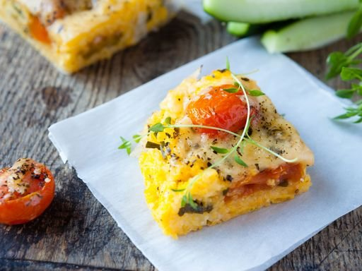

Polenta gratinée
Ingredients
4×
- 1 l d'eau ou de lait
- sel
- 550 g de polenta
- 200 g de lardons
- 1 oignon
- 340 g de gruyère
- basilic
- 2 boules de mozzarella
- 75 cl de lait
- 40 cl de crème fraîche
- 7 tranches de jambon
- beurre
- chapelure
- 100 g d'oignons
- 2 gousses d'ail
- 500 g de tomates
- 2 c. à c. de concentré de tomate
- poivre
- 15 g de crème
- 1 boule de mozzarella

Trois variantes au choix : lardons, jambon-crème ou tomate-mozzarella.
Préparation
Étape 1
Porter à ébullition 1 l d'eau ou de lait salé avec du sel. Y verser la polenta en pluie et cuire 5min sans cesser de remuer, jusqu’à ce qu’elle se détache des parois et ait absorbé tout le liquide.
Étape 2
Garnir selon la version :
- Lardons : 250 g de polenta. En fin de cuisson, incorporer 200 g de lardons rissolés avec 1 oignon en lamelles, 140 g de gruyère et du basilic. Verser dans un plat rectangulaire. Option : 2 boules de mozzarella et moitié moins de gruyère.
- Jambon : 150 g de polenta cuite dans 75 cl de lait et 40 cl de crème fraîche. Verser la moitié dans le plat, couvrir de 4 tranches de jambon et de 200 g de gruyère, puis du reste de polenta. Parsemer de beurre et de chapelure.
- Tomate : 150 g de polenta. Préparer une sauce avec 100 g d'oignons, 2 gousses d'ail, 500 g de tomates, 2 c. à c. de concentré de tomate, du poivre et du basilic. Alterner polenta, sauce et polenta, ajouter 15 g de crème, puis 3 tranches de jambon et 1 boule de mozzarella en tranches.
Étape 3
Soit laisser refroidir, découper en parts et dorer chaque face quelques minutes à la poêle, soit gratiner 30min au four à 220ºC.